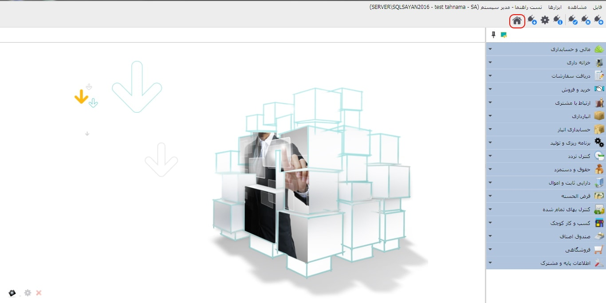

برای ورود به صفحه ی شروع همانند تصویر در صفحه ی اصلی نرم افزار بر روی علامت خانه(Home) کلیک کنید:
پس از کلیک بر روی آیکن «صفحه ی شروع» تصویر زیر نمایان می شود :

تنظیمات پیش فرض
نرم افزار سایان به صورتی است که زمان ایجادارتباط با یک پایگاه داده، «صفحه
شروع» همان پایگاه داده را مشاهده خواهید کرد.
هر کاربر می تواند «صفحه
شروع» به همراه ابزارهای کاربری خود را تنظیم کند،
در واقع آیتم های نمایش داده شده در صفحه
شروع برای هر کاربر با توجه به میزان کاربرد ابزارها با کاربران دیگر متفاوت است .
در بالای «صفحه ی شروع»، همانگونه که پیشتر گفته شد، نام پایگاه داده، نام
کاربر و اطلاعات مرتبط با آن قابل مشاهده است.
شما می توانید، برای دسترسی بهتر و سریع تر به هر
یک از ابزارها و امکانات، آنها را به میزکار خود انتقال دهید.

همانگونه که در تصویر بالا مشاهده می نمایید، با انتخاب و کشیدن هر یک از منوهای نرم افزار روی «صفحه ی شروع» می توانید آیکن میانبر همان منو را در «صفحه ی شروع» داشته باشید.

در صورتی که روی هر یک از آیکن ها کلیک
راست کنید منوی بالا نمایش خواهد شد.
برای تغییر شکل آیکن ها، ویرایش نام
آنها روی میز کار و حذف آن ها از میز
کار می توانید از این روش استفاده کنید.
 در صورتی که بخواهید هنگام ورود به پایگاه داده «صفحه
شروع» برای شما نمایش داده شود، باید
گزینه «بازشدن پس از ورود» را در حالت انتخاب قراردهید.
در صورتی که بخواهید هنگام ورود به پایگاه داده «صفحه
شروع» برای شما نمایش داده شود، باید
گزینه «بازشدن پس از ورود» را در حالت انتخاب قراردهید.
 مدیریت سرور :
این پنجره ارتباط با اس.کیو.ال و پس از آن پنجره
مدیریت سرور را نمایش می دهد.
همانطور که پیشتر توضیح داده شده است، شما از
این طریق می توانید به صفحه مدیریت سرور
دسترسی داشته و تنظیمات و عملیات مورد نیاز را
بر روی پایگاه داده سرور انجام دهید.
مدیریت سرور :
این پنجره ارتباط با اس.کیو.ال و پس از آن پنجره
مدیریت سرور را نمایش می دهد.
همانطور که پیشتر توضیح داده شده است، شما از
این طریق می توانید به صفحه مدیریت سرور
دسترسی داشته و تنظیمات و عملیات مورد نیاز را
بر روی پایگاه داده سرور انجام دهید.
 تنظیمات: توضیحات این بخش پیشتر ارائه گردیده است.
تنظیمات: توضیحات این بخش پیشتر ارائه گردیده است.
 راهنمای استفاده: در « صفحه
شروع» منوی دسترسی به راهنمای نرم افزار
قرار داده شده است که با کلیک روی آن
می توانید راهنمای نرم افزار را مطالعه نمایید.
علاوه بر آن در تمامی صفحات در حال اجرای نرم افزار با
فشردن کلید (F1) می توانید راهنمای همان صفحه را نیز مطالعه نمایید.
راهنمای استفاده: در « صفحه
شروع» منوی دسترسی به راهنمای نرم افزار
قرار داده شده است که با کلیک روی آن
می توانید راهنمای نرم افزار را مطالعه نمایید.
علاوه بر آن در تمامی صفحات در حال اجرای نرم افزار با
فشردن کلید (F1) می توانید راهنمای همان صفحه را نیز مطالعه نمایید.
بروز رسانی: به کمک این ابزار وارد حساب کاربری خود خواهید شد . پس از آن از تب «خدمات» «نسخه ی جدید نرم افزار» را دانلود نمایید، نحوه ی بروز رسانی در راهنمای «مدیریت سرور» شرح داده شده است.
 درباره ی نرم افزار: با انتخاب این
گزینه پنجره زیر به نمایش در می آید
که اطلاعات شرکت سایان و توضیحات پایگاه داده و نرم افزار
در آن نمایش داده شده است.
درباره ی نرم افزار: با انتخاب این
گزینه پنجره زیر به نمایش در می آید
که اطلاعات شرکت سایان و توضیحات پایگاه داده و نرم افزار
در آن نمایش داده شده است.

ارسال تیکت (پرسش): در صورت بروز اشکال یا سوالات فنی مربوط به نرم افزار، لطفا از طریق ثبت تیکت با ما مطرح نمایید تا بتوانیم در اسرع وقت پاسخگوی شما باشیم.